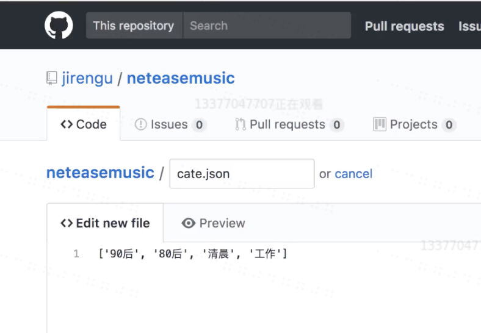
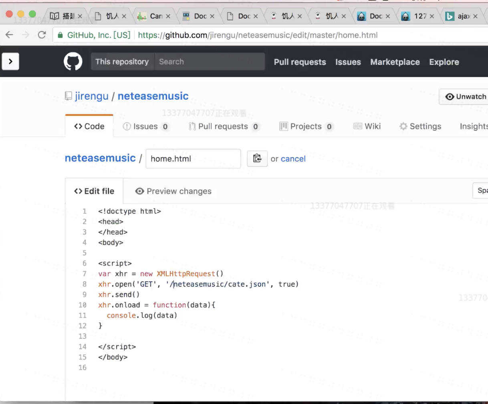
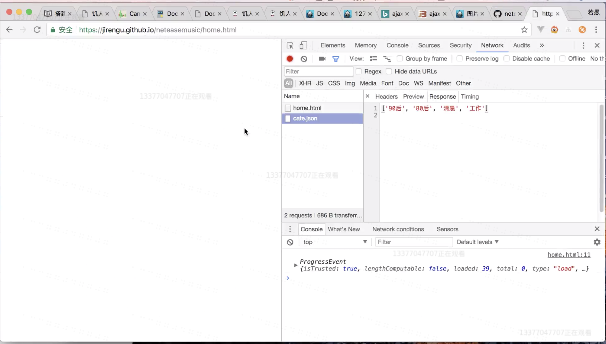

关于mock数据 - 怎样模拟后端数据
1. 搭建一个静态服务器
http-server
比如在本地写一个http-server，可以在本地将需要的数据，做成一个文件，然后将该数据返回。
也可以在github上建立一个项目，创建首页，之后再创建一个json文件，将我们需要的数据写入此文件。
例：

之后打开页面就可以看到我们所取得的json数据了
2. 线上mock数据
在下面的网站里添加接口和数据，再将生成的数据URL写入ajax即可取得在线模拟的数据
2.使用http://rapapi.org/org/index.do
3.使用server-mock